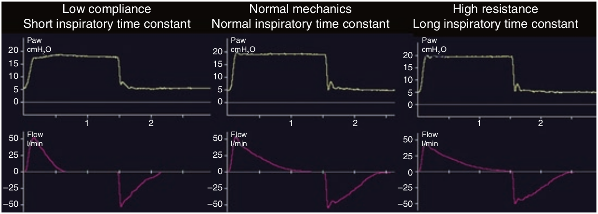

بدنبال اوج اولیه، شدت جریان دمی با الگوی نمائی شروع به کاهش میکند. شکل دقیق این افت نمائی بستگی به ثابت زمانی دمی بیمار دارد (RCINSP). ثابت زمانی دمی برابر است با حاصلضرب کمپلیانس استاتیک و مقاومت راه هوائی. بنابراین اگر ثابت زمانی دمی کوتاه باشد (کمپلیانس کم یا مقاومت کم و یا هردو)، سیستم تنفس به سرعت پر میشود و بنابراین منحنی شدت جریان به سرعت افت میکند. برعکس چنانچه ثابت زمانی دمی کوتاه باشد (کمپلیانس زیاد یا مقاومت زیاد یا هردو)، پر شدن سیستم تنفسی به آهستگی انجام میشود و منحنی شدت جریان با سرعت کمتری افت میکند.

در کنترل فشاری کدامیک از متغییرهای زیر الگوی منحنی شدت جریان دمی و حجم جاری منتقل شده را تحت تاثیر قرار میدهد؟
۱ - ثابت زمانی
۲ - فشار رانش
۳ - مقاومت و کمپلیانس
۴ - زمان دم
۵ - تمام موارد فوق